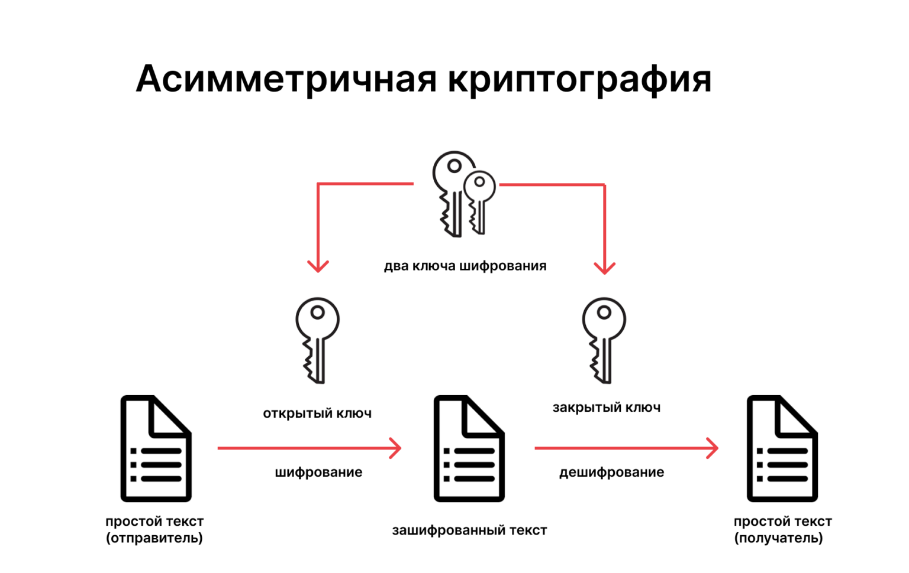
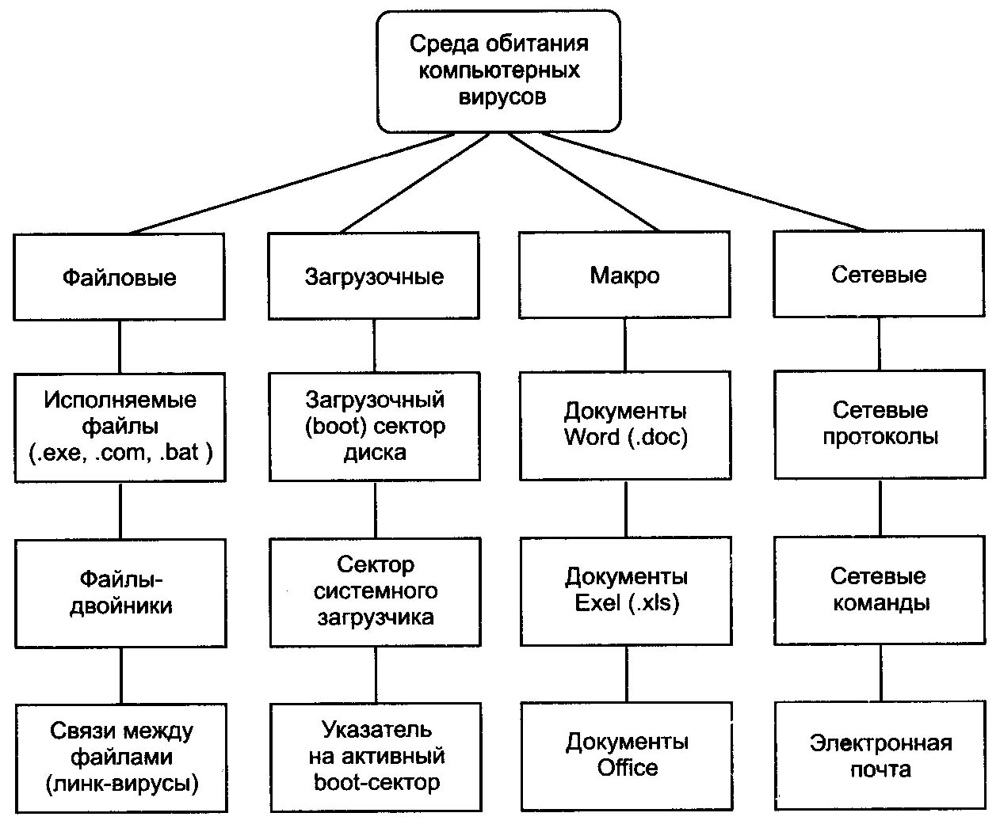
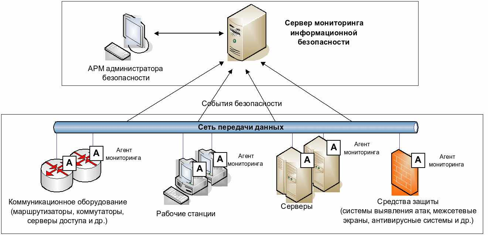
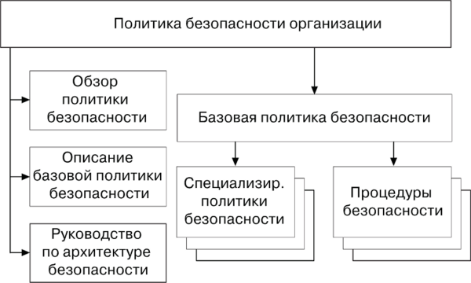

:::::::::::::: {.columns align=center} ::: {.column width=“70%”}
::: ::: {.column width=“30%”}
Методы организации безопасности в операционных системах направлены на защиту информации, предотвращение несанкционированного доступа и обеспечение целостности данных. В данной работе рассматриваются основные подходы и технологии, используемые для обеспечения безопасности в ОС, такие как контроль доступа, шифрование данных, а также механизмы аутентификации и авторизации пользователей.




Методы организации безопасности в операционных системах являются многоуровневыми и требуют комплексного подхода. Аутентификация, шифрование, защита от вредоносного ПО, мониторинг и аудит, а также разработка политик безопасности — все эти элементы играют важную роль в обеспечении защиты информации. В условиях постоянно меняющихся угроз важно постоянно обновлять и адаптировать методы безопасности, чтобы минимизировать риски и защитить данные пользователей и организаций.